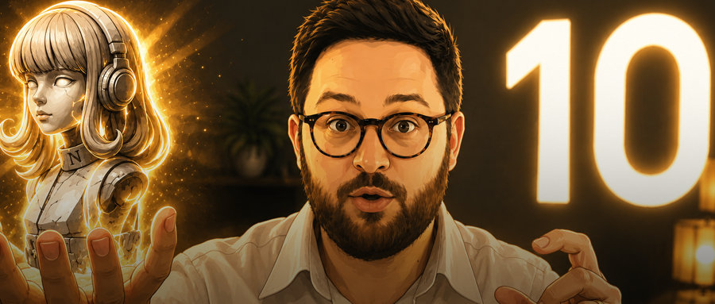

10个神操作，让Hermes全天候主动干活

智东西6月5日报道，有人的Hermes像个聊天窗口，你喊一声它回一句，有人已经把Hermes用成了24小时不睡觉的AI助手，你不用说话，它自己就知道该干什么。这个人叫Sharbel，是海外视频平台YouTube大神，开源了一些Agent相关的项目。他在最新视频里公开了10个把Hermes从对话工具变成可用助手的操作，只要token充足，你的Hermes就可以7×24小时永不停转。01.
Mission Control：Hermes任务控制中心
Sharbel的第一个操作是做一个总控面板。他自己的原话是：“当Hermes真的在干活的时候，我不想那些工作埋在聊天里。我要看到什么在跑、什么在等我、什么被堵住了、什么需要批准、从昨天到现在变了什么。”于是他做了一个叫Max HQ的面板，把自己的内容数据、Agent状态、YouTube和X平台表现全部可视化。这个面板起初是为OpenClaw做的，但可以容纳所有AI Agent，他把Hermes直接嵌进了面板，比如Hermes在处理某个视频时，他能直接在面板上看到任务进度，不用去翻聊天记录。面板已经开源了，发给你自己的Hermes就能自动安装。https://github.com/sharbelxyz/openclaw-mission-control02.
第二个操作是让Hermes监测Notion看板的变化。Sharbel把视频选题放在Notion里，当他把一个选题拖到"待拍摄"列表时，Hermes每隔几分钟就会扫描一次，一旦发现变化，会自动生成一份拍摄简报发到Telegram。简报内容包括判断这个选题该现在拍、以后拍还是毙掉，标题该怎么写，视频前30秒的钩子怎么设计？拍摄前需要准备什么等等。他想达到的目的是，当你的工作流中某一处状态发生改变的时候，Hermes应该知道下一步要做什么，事实上，换成飞书多维表格、企业微信、Trello等等，逻辑也是一样的。03.
第三个操作是Cron。诸如每天早上Hermes会自动发一条"今天AI圈有什么值得报道的事"；每几小时扫一遍X平台，找值得引用的帖子；每天检查竞品有没有出异常火爆的视频；每周审计一次Notion选题库。每周五总结哪些选题卡在流程里没推进等等，这些都是可以实现的定时任务。Sharbel说，这是让Hermes变成24小时助理最快的方式，因为有用的信息在你开口问之前就已经到了。04.
普通的提示词只能让Hermes回答一次，而/goal命令可以让它朝着一个目标持续推进。Sharbel给了模板：先说你要什么结果（比如"决定本周最值得拍的Hermes选题"），然后给出信息源（如VidIQ数据、YouTube竞品动态、频道历史表现、Nova记忆），再加上约束条件（如避开重复角度、避开AI Guru式套路），最后明确交付物（如拍摄用标题、钩子、Demo清单、素材清单）。他还教了一招：让Hermes自己写goal命令。把这句话发给它：“我想用/goal但不想写个模糊的目标。你只问必要的问题来确认我的需求，然后把我的回答转成最适合的/goal命令。”05.
下一个操作是用多个Agent组成研究团队，比如做一条视频的时候，Sharbel会同时开三个子Agent：一个看VidIQ关键词信号，一个看YouTube竞品数据和字幕，一个看自己频道的历史表现和记忆。三个并行跑完，汇总成一个拍摄建议。“一个Agent给你一个答案，三个子Agent给你一整个团队。”他说。06.
这个设置很简单，只需要在Telegram里建不同的话题分组即可。比如YouTube话题只聊视频相关，React话题专门推送X平台上的热门内容，Coding话题做技术活，General话题处理杂事。核心是每个话题维持独立的上下文，不同工作区跑不同的工作流，而不是“一个Agent在干所有事”。07.
这是Sharbel最近添加到任务控制中心里的新功能，一旦Hermes同时在跑多个任务，比如研究竞品、检查数据、创建触发器、准备发布包等等，聊天窗口根本管不过来。看板让每一项任务都有位置：什么是待办、什么在跑、什么已完成、谁负责、什么被堵住了。“看板是让Agent的工作不再消失在聊天记录里的办法。”Sharbel说。08.
Sharbel现在有115个skills，最典型的是Nova，他的YouTube专属Agent。Nova掌握完整的视频制作SOP：检查VidIQ、查看已发布视频、避开被pass过的选题类型、读性能日志、用特定框架写脚本、匹配他的声音等等。这意味着他不用每次都重新搭一套YouTube工作流，直接让Nova去执行流程就够了。他给自己定的规矩是：任何要解释两遍的工作流，就该变成skills，虽然Hermes自己也会在反复使用中自动生成skills，但Sharbel的建议是你不能只靠它自动，你要帮它做成你想要的样子。09.
“Cron是因为时间流动。Webhook是因为世界变了。”他说。来了一个新客户，Hermes会立刻查这家公司的背景；GitHub开了PR，Hermes立刻总结风险；竞品发了视频，Hermes立刻判断值不值得跟进。甚至你刚开完会、文字稿刚生成，Hermes会立刻提取摘要，然后往Notion加待办。这个设置的目标是填补那些"重要的事发生了，但没人立刻处理"的真空期。10.
最后一点也是最重要的，不要让一个Agent干所有事。比如Sharbel让Nova用最强的推理模型，有YouTube权限和视频产出技能、Sage用其他的模型，负责观察X平台、编程Agent有仓库和GitHub权限、行政Agent有日历和邮件权限，发任何东西之前都要审批。“有些Agent需要用你能买得起的最聪明的模型，有些只需要每小时查个页面告诉我变了没有，有些应该有权限，有些绝对不应该有。”他说。这样设定下，拥有的是一个各自配了合适的模型、工具、技能、记忆和权限的Agent团队。
十个操作设置下来，Sharbel最后说，能做到很多事情，和Hermes本身的强大无关，是因为你亲自设计了它，给Hermes搭建了一个系统，在这个系统下，Hermes可以最大程度上自动执行任务，并且根据用户的实际使用状况进行自我调整。如果你只做一个操作，他的建议是从Cron开始，每天早上让Hermes主动给你发一条你想看的东西，这是改变体验感最快的起点。